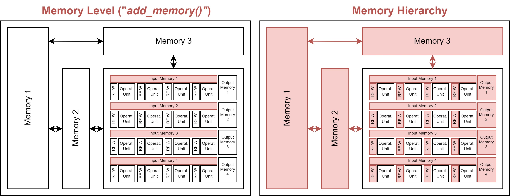
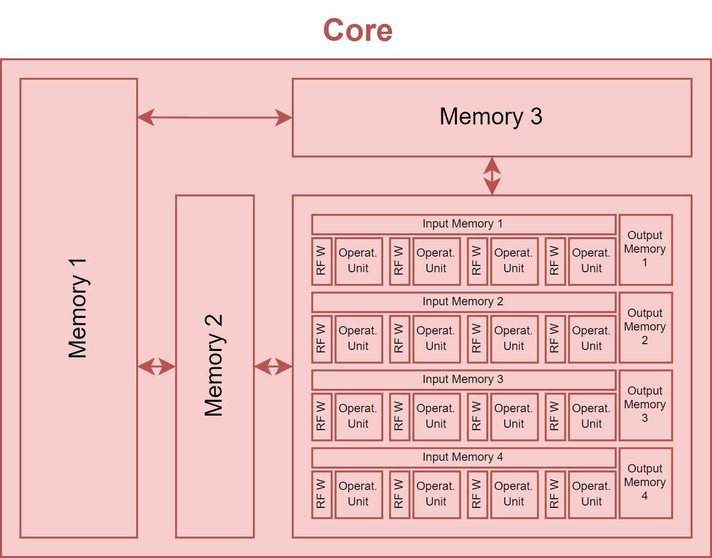

Hardware Architecture¶
In this section, we introduce the general concept of how HW accelerators are modeled within ZigZag and the different well-known accelerators we provide as examples. We start from the smallest building block defined in ZigZag and work our way up towards an accelerator.
Operational Unit¶
Accelerating inference of a NN requires the execution of multiplications and summations (accumulations) across multiple intermediate data (activations) using trained parameters (weights). The operational unit, typically a Multiplier, executes the multiplication of two data elements, typically an activation and a weight.

The operational unit object has the following attributes:
input_precision: List of input operand (data) precision in the number of bits for each input operand (typically there are two input operands for a Multiplier).
output_precision: The bit precision of the operation’s output (e.g., for a multiplier, the output_precision is auto-set to be the sum of two input operands’ precision).
energy_cost: Energy of executing a single operation (e.g., a multiplication).
area: The HW area overhead of a single operational unit (e.g., a multiplier).
Operational Array¶
Inferencing a NN typically requires millions of operations, and an accelerator typically includes an array of operational units that can execute these operations in parallel. This can significantly speed up the computations, as well as increase energy efficiency which is covered later.
The array can have one or multiple dimensions, each with a size. The importance of these dimensions is explained in the introduction of the memory hierarchy.

The operational array object has the following attributes:
operational_unit: The operational unit from which the array is built.
dimensions: The dimensions of the array. This should be defined as a Python dictionary, with the keys being the identifier of each dimension of the array (typically ‘D1’, ‘D2’, …) and the values being the size of this dimension (i.e. the size of the array along that dimension).
Memory Instance¶
In order to store different activations and weights used for the computations in the operational array, different memory instances are attached in a hierarchical fashion. The instances define how big each memory is in terms of capacity and area, what the cost of writing and reading from these memories is, what its bandwidth is, and how many read/write/read-write ports it includes.

The memory instance object has the following attributes:
name: A name for the instance.
size: The memory size in bits.
r_bw/w_bw: A read or write bandwidth in the number of bits per cycle.
r_cost/w_cost: A read or write energy cost.
area: Area overhead of the instance.
r_port/w_port/rw_port: The number of read/write/read-write ports the instance has available.
latency: The latency of memory access in the number of cycles, i.e., after requiring read/write a memory address, how many cycles the memory takes to provide/receive this corresponding data. (For now, this attribute is not actively used. We assume that it is 1 to model the data prefetching behavior thanks to the deterministic dataflow.)
(optional)
min_r_granularity/min_w_granularity: The minimal memory read/write granularity (in bit) the memory supports. This attribute is used to better model the memory that supports half-word access or quarter-word access patterns. For example, if a memory’s read bandwidth (wordlength) is 256 bit/cycle, its read energy (r_cost) is 100, and its min_r_granularity is 128 bits (i.e., assume this memory allow half-word read), read 128 bits from it (we approximatlly assume that) will only take 50 energy. If min_r_granularity is not defined (or is defined as 256 bits), read 128 bits from it will take 100 energy.
Memory Hierarchy¶
Besides knowing what the specs of each memory instance are, the memory hierarchy encodes information with respect to the interconnection of each memory to the operational array, and to other memory instances. This interconnection is achieved through multiple calls to the add_memory(), where the first call(s) adds the first level of memories, which connects to the operational array, and later calls connect the higher level of memories to the lower levels’. This builds a hierarchy of memories.
To know if the memory should connect to the operational array or another lower memory level, it needs to know which data will be stored within the memories. To decouple the algorithmic side from the hardware side, this is achieved through the concept of ‘memory operands’ (as opposed to ‘algorithmic operands which are typically the Input/Output activations and weights W). You can think of the memory operands as virtual operands, which will later be linked to the actual algorithmic operands in the mapping file through the memory_operand_links attribute.
Similarly to how the operational unit can be unrolled (forming an operational array), the memories can also be unrolled, where each memory accompanies either a single operational unit or all the operational units in one or more dimensions of the operational array. This is encoded through the served_dimensions attribute, which specifies if a single memory instance of this memory level serves all operational units in that dimension. This should be a set of one-hot-encoded tuples.
For example, assuming an operational array has 2 dimensions: {D1:3, D2:4}. There are four common served_dimensions settings for a memory level: 1. “None” or {(0, 0)}: the memory does not serve any array dimensions, meaning the memory is unrolled with each operational unit, i.e., there are, in total 12 such memory instances. 2. {(1, 0)}: the memory serves array dimension D1, meaning the memory is unrolled with D2, and each memory instance serves all 3 operational units along D1, i.e., there are, in total 4 such memory instances. 3. {(0, 1)}: the memory serves array dimension D2, meaning the memory is unrolled with D1, and each memory instance serves all 4 operational units along D2, i.e., there are, in total 3 such memory instances. 4. “All” or {(1, 0), (0, 1)}: the memory serves all array dimensions, both D1 and D2, meaning the memory is not unrolled with each operational unit but serves all of them, i.e., there are, in total 1 such memory instance.
Lastly, the different read/write/read-write ports a memory instance has, are assigned to the different data movements possible in the hierarchy. There are four types of data movements in a memory in the hierarchy: from high (fh), to high (th), from low (fl), to low (tl).
fh: from high, meaning the data is provided by the higher level of memory to be written to the current level of memory
th: to high, meaning the data is read out from the current level of memory to go to the higher level of memory
fl: from low, meaning the data is provided by the lower level of memory to be written to the current level of memory
tl: to low, meaning the data is read out from the current level of memory to go to the lower level of memory
At the time of writing, these can be manually linked to one of the read/write/read-write ports through the following syntax: {port_type}_port_{port_number}, port_type being r, w or rw and port_number equal to the port number, starting from 1, which allows allocating multiple ports of the same type. Alternatively, these are automatically generated as a default if not provided to the add_memory() call.
Internally, the MemoryHierarchy object extends the NetworkX DiGraph object, so its methods are available.
{kind=link}
The memory hierarchy object includes:
operational_array: The operational array to which this memory hierarchy will connect. This is required to correctly infer the interconnection through the operational array’s dimensions. Through the add_memory() calls it adds a new MemoryLevel to the graph. This requires for each call a:
memory_instance: A MemoryInstance object you are adding to the hierarchy.
operands: The virtual memory operands this MemoryLevel stores.
port_alloc: The directionality of the memory instance’s different ports, as described above.
served_dimensions: The different dimensions that this memory level will serve, as described above.
Core¶
The operational array and the memory hierarchy together form a core of the accelerator.
{kind=link}
The core object includes:
id: The id of this core.
operational_array: The operational array of this core.
memory_hierarchy: The memory hierarchy of this core.
HW Accelerator Model¶
Multiple cores are combined together into the HW Accelerator, which is the main object modeling the HW behavior.
The accelerator object includes:
name: A user-defined name for this accelerator.
core_set: The set of cores comprised within the accelerator.
global_buffer: A memory instance shared across cores. This is currently un-used.
Modelled examples¶
In this repository, we have modeled 5 well-known DNN accelerators, which are Meta prototype [1], TPU [2], Edge TPU [3], Ascend [4], Tesla NPU [5], and, for our depth-first scheduling research. To make a fair and relevant comparison, we normalized all of them to have 1024 MACs and maximally 2MB global buffer (GB) but kept their spatial unrolling and local buffer settings, as shown in Table I Idx 1/3/5/7/9. Besides, we constructed a variant of every normalized architecture (by changing its on-chip memory hierarchy), denoted with ‘DF’ in the end of the name, as shown in Table I Idx 2/4/6/8/10.
Specific settings¶

Note
K is for output channel; C is for input channel; OX and OY are the output feature map’s spatial dimensions; FX and FY are the weight’s spatial dimensions.
References¶
[1] H. E. Sumbul, T. F. Wu, Y. Li, S. S. Sarwar, W. Koven, E. Murphy- Trotzky, X. Cai, E. Ansari, D. H. Morris, H. Liu, D. Kim, E. Beigne, R. Labs, and Meta, “System-level design and integration of a prototype ar/vr hardware featuring a custom low-power dnn accelerator chip in 7nm technology for codec avatars,” in 2022 IEEE Custom Integrated Circuits Conference (CICC), 2022, pp. 01–08.
[2] N. P. Jouppi, C. Young, N. Patil, D. Patterson, G. Agrawal, R. Bajwa, S. Bates, S. Bhatia, N. Boden, A. Borchers, R. Boyle, P.-l. Cantin, C. Chao, C. Clark, J. Coriell, M. Daley, M. Dau, J. Dean, B. Gelb, T. V. Ghaemmaghami, R. Gottipati, W. Gulland, R. Hagmann, C. R. Ho, D. Hogberg, J. Hu, R. Hundt, D. Hurt, J. Ibarz, A. Jaffey, A. Jaworski, A. Kaplan, H. Khaitan, D. Killebrew, A. Koch, N. Kumar, S. Lacy, J. Laudon, J. Law, D. Le, C. Leary, Z. Liu, K. Lucke, A. Lundin, G. MacKean, A. Maggiore, M. Mahony, K. Miller, R. Nagarajan, R. Narayanaswami, R. Ni, K. Nix, T. Norrie, M. Omernick, N. Penukonda, A. Phelps, J. Ross, M. Ross, A. Salek, E. Samadiani, C. Severn, G. Sizikov, M. Snelham, J. Souter, D. Steinberg, A. Swing, M. Tan, G. Thorson, B. Tian, H. Toma, E. Tuttle, V. Vasudevan, R. Walter, W. Wang, E. Wilcox, and D. H. Yoon, “In-datacenter performance analysis of a tensor processing unit,” SIGARCH Comput. Archit. News, vol. 45, no. 2, p. 1–12, jun 2017.
[3] A. Yazdanbakhsh, K. Seshadri, B. Akin, J. Laudon, and R. Narayanaswami, “An Evaluation of Edge TPU Accelerators for Convolutional Neural Networks,” arXiv e-prints, p. arXiv:2102.10423, Feb. 2021.
[4] H. Liao, J. Tu, J. Xia, H. Liu, X. Zhou, H. Yuan, and Y. Hu, “Ascend: a scalable and unified architecture for ubiquitous deep neural network computing : Industry track paper,” in 2021 IEEE International Symposium on High-Performance Computer Architecture (HPCA), 2021, pp. 789–801.
[5] E. Talpes, D. D. Sarma, G. Venkataramanan, P. Bannon, B. McGee, B. Floering, A. Jalote, C. Hsiong, S. Arora, A. Gorti, and G. S. Sachdev, “Compute solution for tesla’s full self-driving computer,” IEEE Micro, vol. 40, no. 2, pp. 25–35, 2020.